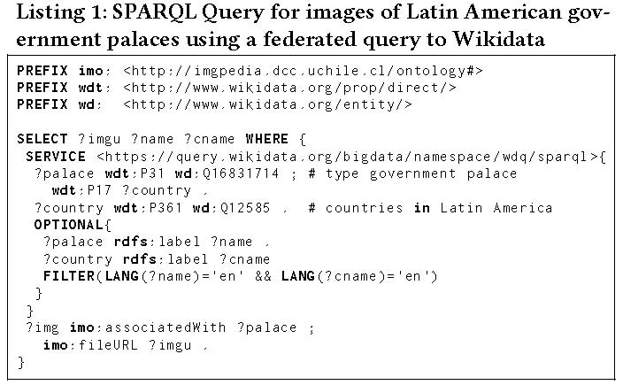
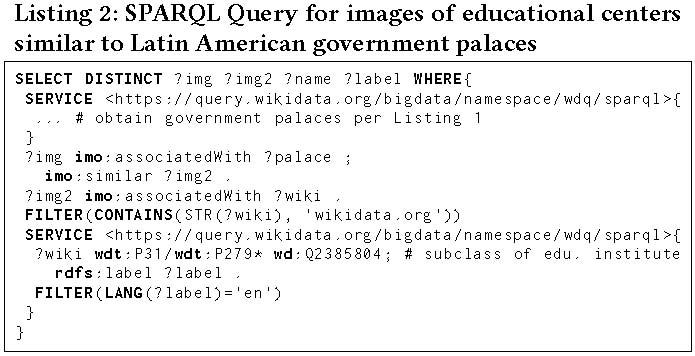
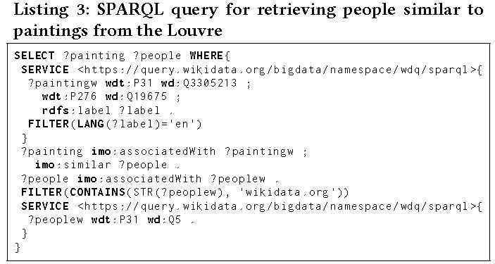

DOI: https://doi.org/10.1145/3184558.3191646
WWW '18: Proceedings of The Web Conference 2018, Lyon, France, April 2018
Despite its importance to the Web, multimedia content is often neglected when building and designing knowledge-bases: though descriptive metadata and links are often provided for images, video, etc., the multimedia content itself is often treated as opaque and is rarely analysed. IMGpedia is an effort to bring together the images of Wikimedia Commons (including visual information), and relevant knowledge-bases such as Wikidata and DBpedia. The result is a knowledge-base that incorporates similarity relations between the images based on visual descriptors, as well as links to the resources of Wikidata and DBpedia that relate to the image. Using the IMGpedia SPARQL endpoint, it is then possible to perform visuo-semantic queries, combining the semantic facts extracted from the external resources and the similarity relations of the images. This paper presents a new web interface to browse and explore the dataset of IMGpedia in a more friendly manner, as well as new visuo-semantic queries that can be answered using 6 million recently added links from IMGpedia to Wikidata. We also discuss future directions we foresee for the IMGpedia project.
CCS Concepts: • Information systems → Multimedia databases; Wikis;
ACM Reference Format:
Sebastián Ferrada, Nicolás Bravo, Benjamin Bustos, and Aidan Hogan. 2018. Querying Wikimedia Images using Wikidata Facts. In WWW '18 Companion: The 2018 Web Conference Companion, April 23–27, 2018, Lyon, France. ACM, New York, NY, USA 7 Pages. https://doi.org/10.1145/3184558.3191646
Multimedia Retrieval and the Web of Data have largely remained separate areas of research with little work in their intersection. However, the benefits of working in the intersection of these two areas are clear: the goal of Multimedia Retrieval is to find videos, images, etc., based on analyses of their context and content, while the Web of Data aims to structure the content of the Web to better automate various complex tasks (including retrieval). Further observing that multimedia content is forming an ever-more visible component of the Web, we argue that work in this intersection could prove very fruitful, both to help bring Web of Data techniques more into the mainstream enabling more tangible applications; as well as allowing more advanced Multimedia Retrieval using the knowledge-bases, query languages and reasoning techniques that the Web of Data already provides. Such a combination would allow, for example, to ask semantic queries on the visual content and real-world context of the Web's images, linking media to related sources of information, events, news articles, or indeed other media.
Along these lines, in previous work we initially proposed the IMGpedia [4] knowledge-base: a linked dataset that provides information about 15 million images from the Wikimedia Commons collection. The dataset of IMGpedia includes different visual descriptors that capture various features from the images, such as colour distribution, shape patterns and greyscale intensities. It also provides static similarity relations among the images and links to related entities on DBpedia [6] and (now) to Wikidata [11]. With IMGpedia it is then possible to answer visuo-semantic queries through a public SPARQL endpoint. These queries combine the similarity relations with the semantic facts that can be extracted from the linked sources; an example of such a query might be “retrieve images of museums that look similar to European cathedrals.”
In our previous work [4] we described the creation of the dataset of IMGpedia and illustrated some preliminary queries that it can respond to using the links provided to DBpedia. In this paper we report on some new visuo-semantic queries that are enabled by newly added links to Wikidata, which provides a more flexible way to request for external entities. We also present a new user interface for IMGpedia that allows people to browse the results of the SPARQL queries featuring the images involved, and to explore details about the images, such as their related web resources and their similar images. Finally we present some future directions in which we foresee the IMGpedia project developing and possible ways in which it might contribute to existing Wikimedia projects.
There have been a number of works in the intersection of the Semantic Web and Multimedia areas, and like IMGpedia, there are some knowledge-bases based on Semantic Web standards that incorporate – or even focus on – multimedia content. DBpedia Commons automatically extracts metadata from the media of Wikimedia Commons providing triples for licensing, file extension and annotations [10]. Bechhofer et al. [2] provide a linked dataset of live music archives, containing feature analysis and links to existing musical and geographical resources. The MIDI dataset [7] represents multiple music collections in the form of Linked Data using MIDI versions of songs curated by the authors or provided by the community. There are also manually curated datasets such as LinkedMDB providing facts about movies, and BBC Music [8] describing bands, records and songs. IMGpedia [4] is a related effort along these lines but with a current focus on describing images; however, unlike (e.g.) DBpedia Commons, which focuses purely on contextual meta-data, IMGpedia aims to leverage the visual content of images to create new semantic links in the knowledge-base that go beyond surface meta-data.
Before we present novel aspects of IMGpedia – the user interface and the new queries enabled by links to Wikidata – we first provide an overview of IMGpedia, the images from which it is built, the visual descriptors used, the types of relations considered, and so forth. Here our goal is to provide an overview of the knowledge-base; for more details we refer the reader to our previous paper [4].
IMGpedia contains information about 14.7 million images taken from the Wikimedia Commons multimedia dataset. We only consider the images with extensions JPG and PNG (92% of the dataset) in order to perform a standardised analysis of them. We store the images locally and characterise them by extracting their visual descriptors, which are high-dimensional vectors that capture different features of the images. The descriptors used where the Histogram of Oriented Gradients (HOG), the Gray Histogram Descriptor (GHD), and the Color Layout Descriptor (CLD). These descriptors extract features related to the borders of the image, to the brightness of the greyscale image, and to the distribution of the colour in the image, respectively. Using these sets of vectors we computed static similarity relations among the images: for each image and descriptor, we find its 10 nearest neighbours and we store these relations along with the computed distances and the type of descriptor being used (to scale to the full image-set, we use an approximate nearest neighbour algorithm). Finally, we take all this information and represent it as an RDF Graph, upload it to a Virtuoso Server and provide a public SPARQL endpoint for clients to issue queries. In Table 1 we present some statistics to give an idea of the size of the dataset and to show the main entities and properties provided by IMGpedia.
| 1cName | Count | Description |
|---|---|---|
| imo:Image | 14,765,300 | Resources describing individual images |
| imo:Descriptor | 44,295,900 | Visual descriptors of the images |
| imo:similar | 473,680,270 | Similarity relations |
| imo:associatedWith | 19,297,667 | Links to DBpedia and Wikidata |
| Total Triples | 3,138,266,288 | RDF triples present in the IMGpedia graph |
The initial release of IMGpedia used the default interfaces from Virtuoso Server1 for writing queries, browsing the results and exploring the resources. Though these interfaces provided the necessary mechanisms for agents to access the resources – a SPARQL endpoint with Linked Data dereferencing – the interfaces for human users were mainly plain HTML tables for displaying SPARQL query results and almost illegible HTML documents for displaying the details of individual resources. We foresaw that the lack of more human-friendly interfaces would prevent people from using and querying the dataset; conversely, being a knowledge-base centred around images, we foresaw much potential for creating a visually-appealing querying and browsing interface over IMGpedia.
Along these lines, to initially address the usability of IMGpedia, we set up a front-end application that makes the process of querying and browsing our data a more friendly experience. The application was developed with AngularJS 5 framework and uses the Virtuoso Server as a back-end.2 The application consists of three main components: a SPARQL query editor, a browser for the results of SPARQL queries that shows the images in-place, and an interface for exploring the details of individual visual entities.
The SPARQL query editor3 provides a text area for writing the queries and a button for executing them. The interface then displays the results of the SPARQL queries below the query editor; if the result contains any visual entities, rather than simply display the URL of the image, it automatically displays the corresponding image by making a request to Wikimedia Commons. In Figure 1 we present a screenshot of the interface showing a simple query for three pairs of similar images within a particular visual similarity distance, with the results displayed below.
A user may click on an image displayed in such a result, which will lead them to a detailed focus view of the information available for that visual entity. This view shows the focus image that is being described, along with its name in Wikimedia, and links to related Wikipedia, Wikidata and DBpedia resources (based on links in those knowledge-bases, appearances in the Wikipedia article associated to those entities, etc.). We also display images similar to the focus image based on precomputed similarity relations present in the IMGpedia knowledge-base; similar images are grouped by visual descriptor and are sorted by distance; the user can hover over each such image to see the distance or can click to go to its focus page. In Figure 2 a screenshot of the interface can be found showing a drawing of Queen Mary I of England by Lucas Horenbout; below this the interface displays similar images found through the grey intensity descriptor in ascending order of distance.
In the first version of IMGpedia, the supported visuo-semantic queries relied heavily on the existence of categories for the resources of DBpedia; for the example query in Section 1, we use the DBpedia category dbc:Roman_Catholic_cathedrals_in_Europe for obtaining European Cathedrals (see [4, Figure 3]). To address this issue and in order to support more diverse queries, we have added links to other complementary context sources; in particular, IMGpedia now provides 6,614,244 links to Wikidata, where a visual entity in IMGpedia is linked to an entity from Wikidata if the image appears on the English Wikipedia article corresponding to that Wikidata entity. The match between Wikipedia articles and Wikidata entities was made querying a dump of Wikidata.4
Using these new links, we can ask novel queries that were not possible before. For example, now we can request images of governmental palaces in Latin America. This was not possible before since there is no category referring to such palaces in DBpedia; if we now leverage these new links to Wikidata, we can combine different predicates in order to achieve our goal. In Listing 1 we show the SPARQL query that satisfies our requirements; it first requests from Wikidata all entities referring to governmental palaces in Latin America through SPARQL federation, further retrieving the URLs of related images, along with the label of the palace and the name of the country. Figure 3 then shows a sample of the results returned.5
The previous query is what we would refer to as a purely “semantic query”, meaning that it does not rely on any of the visual information present in IMGpedia computed from the content of the images. On the other hand, with links to Wikidata, we can perform new visuo-semantic queries combining Wikidata facts and IMGpedia visual similarity; for example, we can ask for educational institutions that are similar to the images of government palaces obtained before. In Listing 2 we show the SPARQL query required to do so. First we use the same service clause requesting for the palaces as in Listing 1 so we omit its body here. Later we obtain the similar images and the entities they are associated with and finally we keep those images that are related with educational institutions using SPARQL property paths to consider any subclasses. In Figure 4, we show the result of the query.
In Listing 3 we show another example of a visuo-semantic query where we look for people with images similar to those associated with paintings in the Louvre. In Figure 5 we show the result of the query, where each painting has two similar people. It is worth noting that the first painting is not on display at the Louvre; however the image is related to the Louvre since it is a self-portrait of Jean Auguste Ingres, the painter of Napoleon I on His Imperial Throne which is on display at the Louvre, where the portrait of Ingres then appears in the Wikipedia article of the painting.
The SPARQL query of Listing 3 can be modified to obtain other paintings similar to those exhibited at the Louvre by changing the type requested on the second SERVICE clause from wd:Q5 (human) to, for example, wd:Q3305213 (painting). An interesting result of this query variation can be seen in Figure 6, where the two images depict the same painting. In such cases we can say that the images are near_copy of each other. Such relations among images could allow reasoning over the entities related to the images; in this case one image corresponds to the painting entity and the other is associated to the painter, and hence it is probable that the painter is the author of the artwork. Section 6 discusses this topic further.
We presented new features of IMGpedia: a more friendly user interface that helps people explore the knowledge-base, and links to Wikidata resources that enable novel types of visuo-semantic queries. However, our future goal is to use IMGpedia as a starting point to explore and potentially prove a more general concept: that the areas of Multimedia Retrieval and the Web of Data can potentially complement each other in many relevant aspects. Thus there are many features that can be added, many use-cases that can be conceived, and many research questions that may arise from the current version of IMGpedia in the intersection of both areas.
The following are some of the directions we envisage:
While the prior topics relate to extending or enhancing IMGpedia, an orthogonal but crucial aspect is the development of user applications on top of the knowledge-base. While the interface described here is a step in that direction – allowing users to explore the images, their associated resources, and their similarity relations – there is potentially much more left to be done. As a first step, we would like users to be able to specify keyword searches over the images. More ambitiously, for example, we would like users to be able to pose more complex visuo-semantic queries over the data (currently this still requires knowledge of RDF and SPARQL). Such development of applications on top of IMGpedia would also require appropriate usability testing to validate. In general, we believe that through its focus on multimedia and use of existing knowledge-bases, IMGpedia has the potential to become a tangible demonstration of the value of Semantic Web technologies.
Another important question that we wish to address is: how can IMGpedia compliment the existing projects of the Wikimedia Foundation? Could the similarity relations computed by IMGpedia be added, for example, to the associated descriptions in Wikidata? Could the detection of near-duplicate images help in some way the editors of Wikipedia? Could some further visual information be added back to the Wikimedia pages for images? What other possible use-cases might there be for a knowledge-base such as IMGpedia in the context of the varied Wikimedia projects? We are eager to discuss and explore such use-cases.
This work was supported by the Millennium Institute for the Foundations of Data, by CONICYT-PFCHA 2017-21170616 and by Fondecyt Grant No. 1181896. We would like to thank Larry González and Camila Faúndez for their assistance.
Here we provide the SPARQL queries used to generate the examples.



1 http://imgpedia.dcc.uchile.cl/sparql
2The source code of the interface application can be found at https://github.com/NicolasBravo94/imgpediavis.
3 http://imgpedia.dcc.uchile.cl/query
4The Wikidata dump used was that from 2017-07-25
5In the figure we can see that there is an image misplaced: the image in the upper right depicts Kedleston Hall in Derbyshire, however in the Wikipedia dump that was used (2015-12-01) it was stated that said image was used in the English version of the article about the Casa Rosada, and hence it is presented and mislabelled by IMGpedia.
This paper is published under the Creative Commons Attribution 4.0 International (CC-BY 4.0) license. Authors reserve their rights to disseminate the work on their personal and corporate Web sites with the appropriate attribution.
WWW '18, April 23-27, 2018, Lyon, France
© 2018; IW3C2 (International World Wide Web Conference Committee), published under Creative Commons CC-BY 4.0 License. ACM ISBN 978-1-4503-5640-4/18/04.
DOI: https://doi.org/10.1145/3184558.3191646
{kind=link}